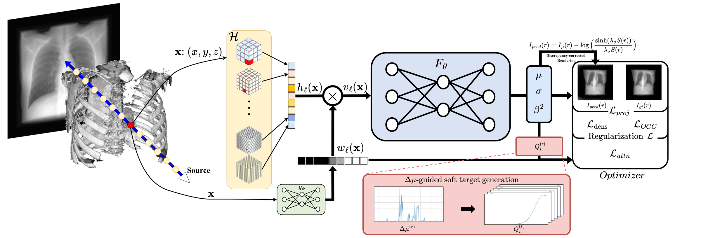
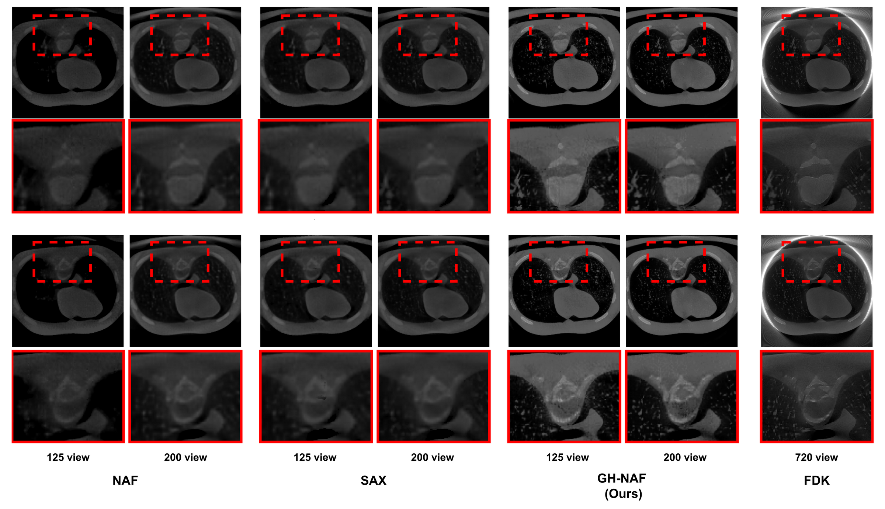
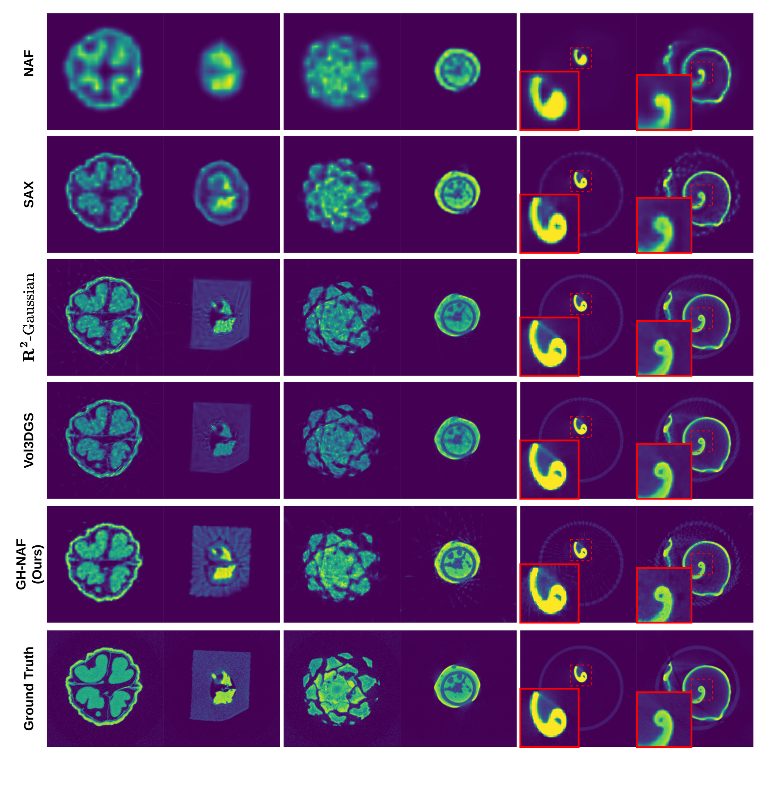
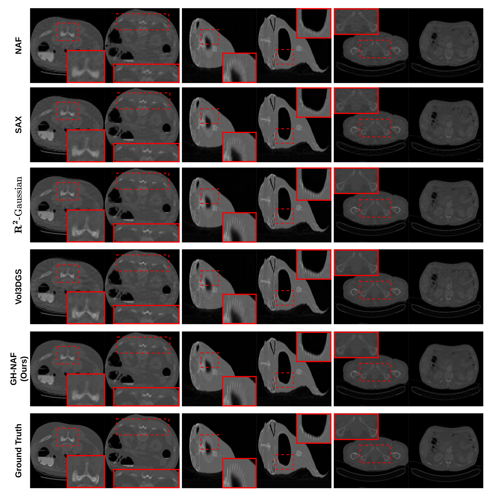

Discrepancy-aware sparse-view CBCT reconstruction via frequency-disentangled attention over multi-resolution hash grids.
* Equal contribution · † Corresponding authors
Real CBCT projections carry scatter, beam-hardening, and noise—uniformly fusing multi-resolution hash features blends them into every level. GH-NAF supervises each hash level independently with attenuation-gradient and uncertainty cues, disentangling frequency content so structure survives where naïve fusion fails.
Existing NeRF-based CBCT methods assume an idealized monoenergetic setting and uniformly fuse multi-resolution hash features, blending projection discrepancies and heterogeneous frequencies into a single representation. We introduce GH-NAF, which trains each hash-grid level independently under uncertainty-weighted supervision. A learned attention selects coarse levels for homogeneous tissue and fine levels at structural boundaries, while a discrepancy-corrected renderer absorbs scatter and beam-hardening at projection time. The result is sharper boundaries, uniform intra-material contrast, and reduced low-frequency bias—on both real and synthetic CBCT.
Per-point softmax over hash levels replaces uniform concatenation for frequency-aware disentanglement.
Attenuation-gradient soft targets, modulated by uncertainty, teach the attention which scale to trust.
A differentiable corrector absorbs scatter and beam-hardening, keeping them out of the attenuation field.

Mobile CBCT acquisition with pronounced beam-hardening. GH-NAF preserves intra-material contrast where NAF, SAX, and even 720-view FDK leak shading near bone.

Walnut · Pine · Seashell, 25 and 50 views. GH-NAF outperforms NAF, SAX, R²-Gaussian, and Vol3DGS in PSNR/SSIM with sharper boundaries.

13 volumes simulated with TIGRE. Even without the discrepancy module, hash-level attention alone delivers cleaner tissue and crisper outlines.

@inproceedings{ohlee2026ghnaf, title = {GH-NAF: Grid-Adaptive Hash-Level Attended Neural Attenuation Fields for Discrepancy-Aware CBCT}, author = {Oh, Seong Je and Lee, Ju Hwan and Lim, Chae Yeon and Lee, Donghwan and Chung, Myung Jin and Kim, Kyungsu}, booktitle = {Proceedings of the IEEE/CVF Conference on Computer Vision and Pattern Recognition (CVPR)}, year = {2026} }